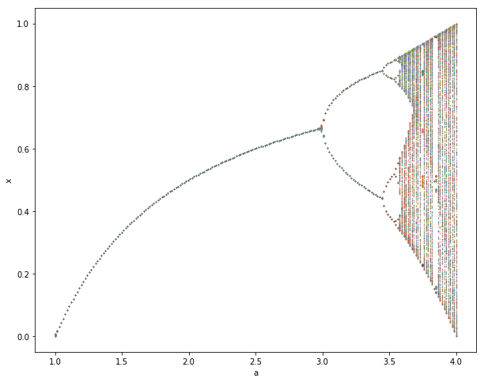

5. Iterative Computation: Exercise#
Name:
import numpy as np
import matplotlib.pyplot as plt
%matplotlib inline
1. Newton’s method in n dimension#
Newton’s method can be generalized for \(n\) dimensional vector \(x \in \Re^n\) and \(n\) dimensional function \(f(x)={\bf0} \in \Re^n\) as
where \(J(x)\) is the Jacobian matrix
Define a function that computes
and its Jacobian.
def f(x, a, b, deriv=True):
"""y[0] = a[0] + a[1]*x[0]**2 + a[2]*x[1]**2\\
y[1] = b[0] + b[1]*x[0] + b[2]*x[1]
also return the Jacobian if derive==True"""
y0 =
y1 =
if deriv:
J =
return np.array([y0, y1]), np.array(J)
else:
return np.array([y0, y1])
Cell In[2], line 5
y0 =
^
SyntaxError: invalid syntax
a = [-1, 1, 1]
b = [-1, 1, 2]
f([1,1],a,b)
Consider the case of \(a = [-1, 1, 1]\) and \(b = [-1, 1, 2]\) and visualize parabollic and linear surfaces.
%matplotlib notebook
x = np.linspace(-2, 2, 25)
y = np.linspace(-2, 2, 25)
X, Y = np.meshgrid(x, y)
XY = np.array([X,Y]) # (2,25,25) array
Z =
ax = plt.figure(figsize=(8,8)).add_subplot(projection='3d')
ax.plot_surface(X, Y, Z[0])
Implement Newton’s method for vectors.
def newton(f, x0, *args, target=1e-6, maxstep=20):
"""Newton's method.
f: should also return Jacobian matrix
x0: initial guess
*args: parameter for f(x,*args)
target: accuracy target"""
n = len(x0) # dimension
x = np.zeros((maxstep+1, n))
y = np.zeros((maxstep, n))
x[0] = x0
for i in range(maxstep):
y[i], J = f(x[i], *args)
if < target:
break # converged!
x[i+1] =
else:
print('did not coverge in', maxstep, 'steps.')
return x[:i+1], y[:i+1]
Test how it works from different initial guesses.
newton(f, [0,1], a, b)
newton(f, [1,1], a, b)
Test it with any other function of your interest.
2. Bifurcation and Chaos#
A value of \(x_k\) that stays unchanged after applying a map \(f\) to it, i.e.
is called a fixed point of \(f\).
Let us consider the logistic map
Plot \(x_{k+1}=ax_k(1-x_k)\) along with \(x_{k+1}=x_k\) for \(a=0.5, 2, 3.3\).
What are the fixed points of these maps?
A fixed point is said to be “stable” when nearby values of \(x_k\) also converge to the fixed point after applying \(f\) many times; it’s said to be “unstable” when nearby values of \(x_k\) diverge from it.
Draw “cobweb plots” on top of each of the previous plots to visualize trajectories. Try several different initial values of \(x_k\).
Are the fixed points you found stable or unstable?
How is the stability related to the slope (derivative) of \(f(x_k)=ax_k(1-x_k)\) at the fixed point?
3: optional) A bifurcation diagram is a plot of trajectories versus a parameter.
draw the bifurcation diagram for parameter \(a\) \((1 \le a \le 4)\), like below:

Hint:
Use the
logistic()anditerate()functions from the previous lecture.For each value of \(a\), show the trajectory (i.e., the values that \(x_k\) took over some iterations) of the map after an initial transient.
Since \(x_k\) is 1D, you can plot the trajectory on the y axis. For example, take 200 points in \(1 \le a \le 4\), run 1000 step iterations for each \(a\), and plot \(x\) after skipping first 100 steps.
3. Recursive call and fractal#
Draw the Sherpinski gasket like below.